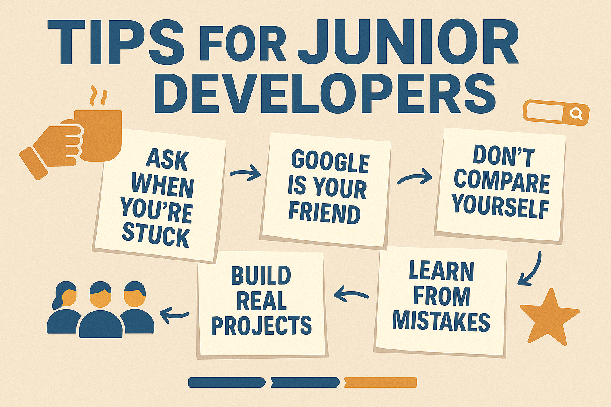

Tips for Junior Developers: What I Wish I Knew When I Started
July 2025
Starting your journey as a junior developer can feel both exciting and overwhelming. Trust me, I've been there! There are so many new things to learn, so many acronyms, and sometimes it seems like everyone else knows what they're doing, except you. But don’t worry, that’s exactly how it’s supposed to feel in the beginning.
Here are some tips I wish someone had told me when I was just starting out. I hope they’ll help you navigate your first months (or years!) in tech.
1. Don’t Be Afraid to Ask Questions
No one expects you to know everything right away. Asking questions is a sign that you want to learn, not that you’re clueless. Senior developers ask questions too, often really good ones! If you get stuck, try to solve the problem on your own, but don’t hesitate to ask for help when you need it.
2. Google Is Your Best Friend
Learning how to search for answers is one of the most important developer skills. Stack Overflow, documentation, forums, these are all part of the job. Sometimes, knowing how to ask the right question online is more valuable than memorizing syntax.
3. Build Real Projects (Even Small Ones)
You’ll learn much faster by building things, websites, apps, small scripts, than by just reading or watching tutorials. Don’t wait for the “perfect” idea. Start with something simple and finish it. Each project will teach you more than you expect!
4. Don’t Compare Yourself to Others
It’s easy to feel like you’re falling behind, especially when you see other people posting about their progress. Remember, everyone’s learning journey is different. Focus on your own growth and celebrate your small wins.
5. Embrace Mistakes
You will make mistakes, lots of them. That’s not just normal, it’s necessary! Every bug you fix, every feature you break and then repair, will make you a stronger developer. The only real failure is giving up.
6. Read (and Write) Documentation
Documentation isn’t just for advanced developers. Learning to read docs early will save you hours of confusion later. And if you figure something out, write a note about it or update the docs if you can. Future you (and other juniors) will thank you.
7. Join the Community
Whether it’s online (Twitter, Reddit, Discord, forums) or local meetups, being part of a community can make a huge difference. You’ll find support, mentorship, and maybe even new friends.
Conclusion
Everyone starts as a beginner. It’s okay to feel lost at times. What matters is that you keep going and keep learning. Be kind to yourself, celebrate your progress and remember, every senior developer was once a junior, too.
Do you have your own tips or stories from your early days in tech? Share them in the comments or reach out, I’d love to hear from you!